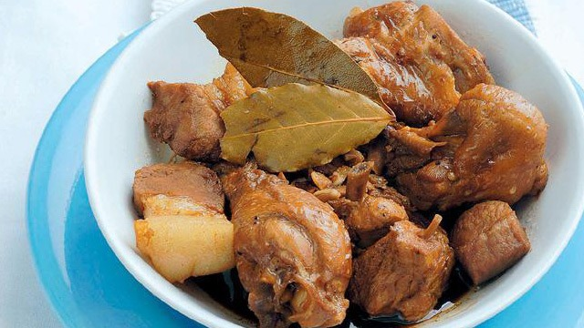

Home
Adobo

Description
This CPA isn't a classic for nothing.
All the ingredients this needs are already in your pantry.
Ingredients
- 1/2 kilo Chicken cut into serving pieces
- 1/2 kilo pork (use pork rounds), cut into serving pieces
- Salt to taste
- 1 Cup pineapple juice
- 1/2 Cup Soy Sauce
- 2 tablespoons Garlic crushed
- 3 bay leaf
- 1/8 teaspoon black pepper
- 1/2 teaspoon black peppercorns
Steps
- Place chicken and pork in a stainless-steel bowl. Season with salt and pepper to taste.
- In a medium saucepot, combine pineapple juice, soy sauce, white vinegar, crushed garlic, bay leaves, ground black pepper, and whole black peppercorn.
- Bring to a boil and add seasoned meat pieces. Lower the heat to a slow simmer. Skim the surface of any froth, if any. Continue to simmer for about 25 to 30 minutes. Leftover tip: For adobo flakes: Flake meat and stir-fry in oil.